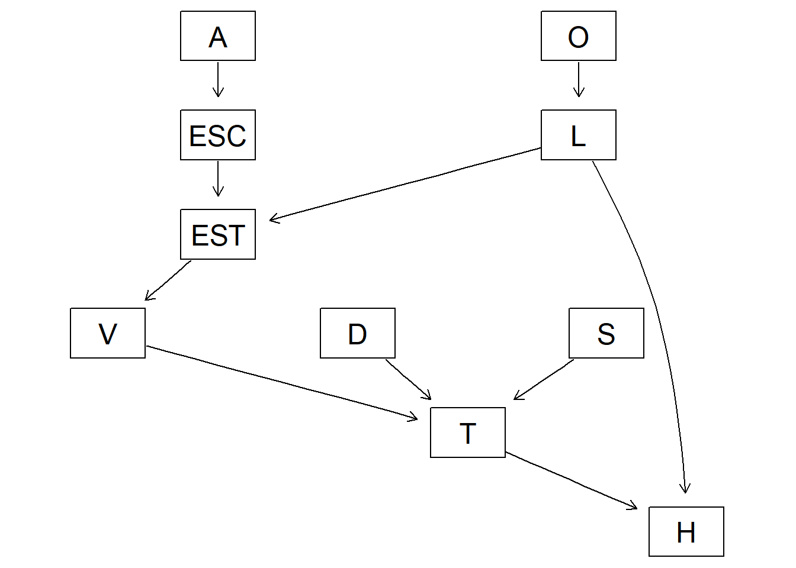
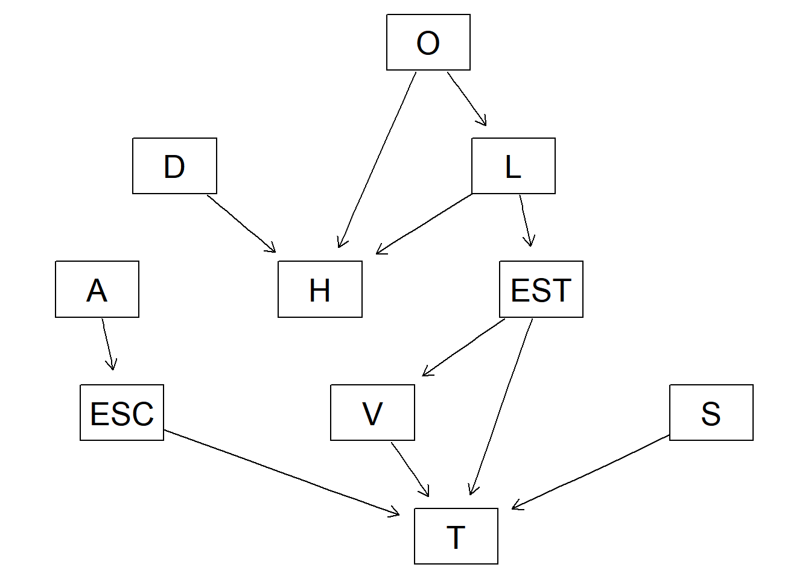
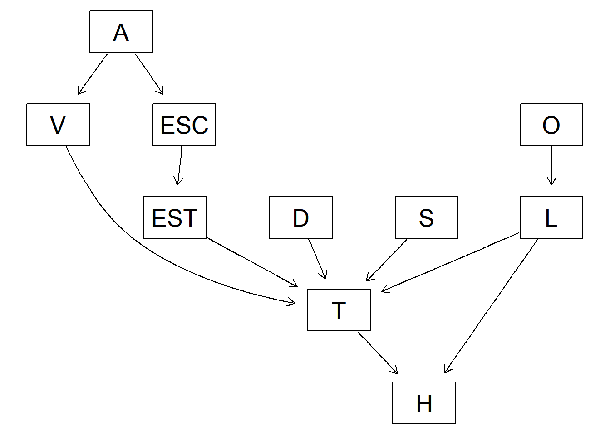
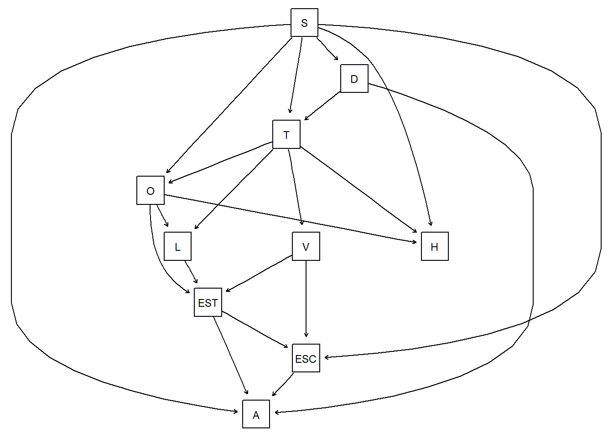

Redes Bayesianas para el transporte
Resumen
Este estudio utiliza la Encuesta Origen-Destino del INEGI realizada en 2017 para analizar los patrones de movilidad de los ciudadanos en la Ciudad de México. Mediante el uso de la teoría de redes bayesianas, se construye un modelo probabilístico a partir de los datos de la encuesta para analizar las relaciones entre las variables sociodemográficas y de transporte. Se proponen y evalúan diferentes estructuras de Redes Acíclicas Dirigidas (DAGs) para representar estas dependencias. Los resultados del análisis permiten responder a preguntas clave sobre la movilidad. Se busca resaltar la importancia de los modelos probabilísticos para comprender la complejidad de los modelos de transporte en las ciudades mexicanas, con el objetivo de brindar información útil para la planeación de políticas públicas relacionadas con el transporte.
Palabras clave
redes bayesianas, bnlearn, movilidad, discretización
1 Introducción
La movilidad urbana es un aspecto fundamental para el desarrollo socioeconómico de las ciudades modernas, ya que esta influye de manera significativa en la calidad de vida de sus habitantes, el medio ambiente y la economía de cada una. En la Zona Metropolitana del Valle de México, esto presenta una gran complejidad debido a su tamaño, densidad de población y red de transporte. Comprender los patrones de viaje y los factores que influyen en la toma de decisiones de los ciudadanos es crucial para el diseño de políticas públicas más efectivas y sostenibles.
La Encuesta Origen-Destino en Hogares (EOD) 2017, realizada por el Instituto Nacional de Estadística y Geografía (INEGI) en colaboración con el Instituto de Ingeniería de la UNAM, fue la fuente de datos más importante para este proyecto. A partir de esta encuesta, se obtuvo información que muestra los patrones de movilidad cotidiana de los habitantes de la Ciudad de México y las características de los viajes que estos realizan. Mediante estos datos, es posible analizar las relaciones entre variables sociodemográficas (como género, edad e ingresos) y las decisiones de transporte (como el medio utilizado, la duración y el motivo del viaje) [1].
Este artículo explora estas relaciones de dependencia utilizando la teoría de las redes bayesianas. Este enfoque permite modelar la estructura de dependencia probabilística entre múltiples variables, lo que es bastante útil para analizar fenómenos complejos como la movilidad urbana. El objetivo de este estudio es es construir y comparar diferentes modelos de Redes Acíclicas Dirigidas (DAGs) que representen las relaciones entre las variables de la encuesta mencionada; para posteriormente, responder preguntas de investigación específicas acerca de la movilidad en la ZMVM.
2 Metodología
Una vez llamada la base de datos, se crea un diccionario y se cambian los valores de las variables a datos de tipo factor, así como al significado correspondiente en texto para un manejo de los datos más sencillo.
S T EST D O L V ESC
"factor" "factor" "factor" "factor" "factor" "factor" "factor" "factor"
A H
"factor" "factor" Posteriormente, se propusieron 3 DAGs diferentes con base en las relaciones entre las variables que se consideraron de mayor impacto, denotando nodos con sus respectivos arcos, así como las relaciones de dependencia. Asimismo, para el manejo de la DAG se asignó una clave corta a cada variable:
- A = edad_cat
- D = dia_viaje
- EST = estrato
- V = autos_camionetas
- L = localidad
- H = tiempo_cat
- O = Entidad
- ESC = escolaridad
- S = sexo
- T = transporte
La DAG 1 se formula con base en que la edad determina la educación y ésta se relaciona con el estrato sociodemográfico de la perosna y el tipo de transporte que utiliza, así como arcos en función de cuestiones geográficas y el tiempo de traslado, así como quizá el sexo interfiera con el medio de transporte.
Random/Generated Bayesian network
model:
[A][D][O][S][L|O][ESC|A][EST|L:ESC][V|EST][T|D:V:S][H|L:T]
nodes: 10
arcs: 10
undirected arcs: 0
directed arcs: 10
average markov blanket size: 3.00
average neighbourhood size: 2.00
average branching factor: 1.00
generation algorithm: Empty 
Se observa cómo las relaciones de dependencia son bastante débiles, siendo la mayor la relación entre la localidad de la persona con respecto a las horas que tarda en el transporte; sin embargo, aún sigue siendo muy baja.
La segunda DAG propuesta se centra principalmente en el entorno geográfico, es decir, que del lugar de origen o la localidad se relacionan el estrato, el tiempo del viaje, la cantidad de vehículos, así como otras relaciones entre el sexo y la edad para determinar la escolaridad y el medio de transporte.
Random/Generated Bayesian network
model:
[A][D][O][S][L|O][ESC|A][EST|L][H|D:L:O][V|EST][T|EST:V:ESC:S]
nodes: 10
arcs: 11
undirected arcs: 0
directed arcs: 11
average markov blanket size: 3.60
average neighbourhood size: 2.20
average branching factor: 1.10
generation algorithm: Empty 
Nuevamente, al analizar las relaciones de dependencia entre las variables, se observa que la dependecia más fuerte va desde el nodo L al nodo H.
Por último, la tercera DAG se basa principalmente en factores personales como los determinantes de mayor impacto. Teniendo como nodos padres e independientes la edad y el sexo, y que a partir de éstos se condicionen otros aspectos relacionados con la movilidad de las personas, su escolaridad y el estrato en el que se encuentran.
Random/Generated Bayesian network
model:
[A][D][O][S][V|A][L|O][ESC|A][EST|ESC][T|D:EST:V:L:S][H|L:T]
nodes: 10
arcs: 11
undirected arcs: 0
directed arcs: 11
average markov blanket size: 4.20
average neighbourhood size: 2.20
average branching factor: 1.10
generation algorithm: Empty 
En la tercera DAG destacan las relaciones de dependencia de A a V, relacionando la edad de la persona con la cantidad de vehículos en su hogar, así como de L a T, asociando la localidad con el tipo de transporte que utiliza.
Una vez que ya se plantearon las 3 DAGs propuestas, se comparan sus network scores para determinar cuál de las 3 es la que mejor refleja la estrucutra de dependencia de los datos, para esto se usan las pruebas BIC (Bayesian Information Criterion) y AIC (Akaike Information Criterion).
El puntaje de la prueba BIC en la primera DAG es:
[1] -7863114El puntaje de la prueba AIC en la primera DAG es:
[1] -7857363El puntaje de la prueba BIC en la segunda DAG es:
[1] -8032815El puntaje de la prueba AIC en la segunda DAG es:
[1] -7944145El puntaje de la prueba BIC en la tercera DAG es:
[1] -7983492El puntaje de la prueba AIC en la tercera DAG es:
[1] -7918357Dado que la primera DAG es la que tiene un mayor puntaje (dentro de la librería bnlearn aquella con mejor ajuste es la que tiene mayor puntaje) en ambas pruebas, entonces es la red que se ajusta mejor a los datos.
De igual forma, se emplea el algoritmo hill-climbing para obtener la mejor estructura de la DAG en función de la base de datos.
[1] "[S][D|S][T|S:D][O|S:T][V|T][L|T:O][H|S:T:O][EST|O:L:V][ESC|S:EST:V][A|S:EST:D:ESC]"La cual se ve de la siguiente manera, con los arcos creando las relaciones de dependencia de sus determinados nodos.

En esta nueva DAG generada por el algoritmo hill-climbing la fuerza entre los nodos varía, siendo en la mayoría de 0; sin embargo, hay algunas otras relaciones más fuertes como el sexo con si se transportan entre semana o no, o el tiempo que tardan, aunque otras lógicamente no hacen sentido, tal como el sexo con la entidad de origen.
El puntaje en la prueba BIC de la nueva DAG es:
[1] -7781807El puntaje en la prueba AIC de la nueva DAG es:
[1] -7769003Se observa que la nueva DAG determinada por hill-climbing tiene un mejor ajuste de su red en la relación de los datos y sus respectivas variables, ya que tiene un puntaje mayor. Por tal motivo, se llevarán a cabo las queries con base en best_dag.
3 Aplicación
Trabajamos con la EOD-2017 (ZMVM; ~890 000 registros). Las variables consideradas fueron: S (Sexo), A (Edad categorizada), EST (Estrato), T (Transporte), D (Día de viaje), O (Entidad de origen), L (Tamaño de localidad), V (Autos disponibles), ESC (Escolaridad) y H (Duración del viaje). Tras la limpieza de códigos, recodificamos a factores con etiquetas y discretizamos cuando fue necesario (p. ej., H en Menos1h vs 1homas).
Modelamos con redes bayesianas discretas. Primero propusimos un DAG sustentado en hipótesis sustantivas; al mismo tiempo, aprendimos una estructura desde los datos mediante hill climbing. Para ambas estructuras ajustamos las tablas de probabilidad condicional (CPTs) con suavizado bayesiano.
La selección del modelo se basó en AIC y BIC, buscando el mejor equilibrio entre ajuste y complejidad. Además, evaluamos dependencias locales con arc.strength (información mutua) y pruebas de independencia para identificar arcos débiles o prescindibles.
Sobre el modelo seleccionado realizamos las consultas probabilísticas con cpquery mediante likelihood weighting, reportando los valores puntuales y señalando las limitaciones muestrales cuando aplicaba.
3.1 Uso de auto/moto por sexo y edad (entre semana)
Se busca comprender si los hombres de edad media y alta, y de estrato social medio bajo tienden a usar automóvil o moto entre semana en comparación con las mujeres con las mismas características.
El evento de interés en está consulta es si la persona de transporta en automóvil o moto (T == “Moto” o T == “Auto”); dado que sea hombre (S==“Hombre”), se transporte entre semana (D==“Semana”), se encuentre en un estrato sociodemográfico medio bajo (EST==“MedioBajo”) y sea de edad media o alta (A==“MedianaEdad” o A==“AdultoMayor”). La probabilidad de que suceda es: \[ P(T \in \{\text{Auto},\text{Moto}\} \mid S=\text{Hombre},\ D=\text{Semana},\ EST=\text{MedioBajo},\ A \in \{\text{MedianaEdad},\text{AdultoMayor}\}) = \frac{\#\{T \in \{\text{Auto},\text{Moto}\},\ S=\text{Hombre},\ D=\text{Semana},\ EST=\text{MedioBajo},\ A \in \{\text{MedianaEdad},\text{AdultoMayor}\}\}} {\#\{S=\text{Hombre},\ D=\text{Semana},\ EST=\text{MedioBajo},\ A \in \{\text{MedianaEdad},\text{AdultoMayor}\}\}}. \]
[1] 0.1089333Para analizar este mismo evento, pero ahora con mujeres, únicamente (S==“Mujer”) y ahora la probabilidad es: \[ P(T \in \{\text{Auto},\text{Moto}\} \mid S=\text{Mujer},\ D=\text{Semana},\ EST=\text{MedioBajo},\ A \in \{\text{MedianaEdad},\text{AdultoMayor}\}) = \frac{\#\{T \in \{\text{Auto},\text{Moto}\},\ S=\text{Mujer},\ D=\text{Semana},\ EST=\text{MedioBajo},\ A \in \{\text{MedianaEdad},\text{AdultoMayor}\}\}} {\#\{S=\text{Mujer},\ D=\text{Semana},\ EST=\text{MedioBajo},\ A \in \{\text{MedianaEdad},\text{AdultoMayor}\}\}}. \]
[1] 0.06952873En conclusión, los hombres de esas características usan más la moto o automovil entre semana que las mujeres con las mismas características.
3.2 Probabilidad de residir en Aguascalientes dado taxi
¿Cuál es la probabilidad de que una persona de estrato MedioBajo viva en Aguascalientes dado que se mueve en taxi?
En esta consulta, el evento de interés O = Aguascalientes está fuera del soporte muestral de la base utilizada. La EOD-2017 analizada corresponde a la Zona Metropolitana del Valle de México (ZMVM); en este marco, la variable O (Entidad de origen) solo toma los valores CDMX, Hidalgo y Edomex. Es decir que el dominio observado de (O) es \[ \Omega_O = \{\text{CDMX},\text{Hidalgo},\text{Edomex}\} \]por lo que Aguascalientes no pertenece al dominio. Esta restricción se confirma con un conteo simple: la frecuencia de registros con O = Aguascalientes es 0.
Bajo esta situación, la probabilidad condicional solicitada se evalúa como: \[ P\bigl(O=\mathrm{Aguascalientes}\mid EST=\mathrm{MedioBajo},\,T=\mathrm{Taxi}\bigr) =\frac{\#\{O=\mathrm{Aguascalientes},\,EST=\mathrm{MedioBajo},\,T=\mathrm{Taxi}\}} {\#\{EST=\mathrm{MedioBajo},\,T=\mathrm{Taxi}\}}. \]Dado que el numerador es 0 (no existen casos con O = Aguascalientes en la muestra) y el denominador es positivo (sí hay observaciones con EST = MedioBajo y T = Taxi), se obtiene:
\[ P(O=\mathrm{Aguascalientes}\mid EST=\mathrm{MedioBajo},\, T=\mathrm{Taxi})=0 \]
Es importante mencionar que se trata de una imposibilidad muestral por ausencia de casos en la muestra, no necesariamente de una imposibilidad poblacional.
3.3 Duración >1 h por tamaño de localidad y modo
Nos interesa saber si es más probable que las personas de localidades < 2,500 habitantes realicen viajes de más de 1 hora en automóvil, colectivo/micro, metro, autobús, trolebús, tren ligero, tren suburbano o transporte de personal, en comparación con las personas de localidades > 100,000 habitantes que cumplan con las mismas características.
3.4 Autos/camionetas y escolaridad
¿Cuál es la probabilidad de que una persona tenga al menos un auto o camioneta dado que su nivel de escolaridad es primaria o preescolar?